security
GY-01 / GY-02 山門守護
阿・吽 二字真言
山門金剛護法——哼哈二將
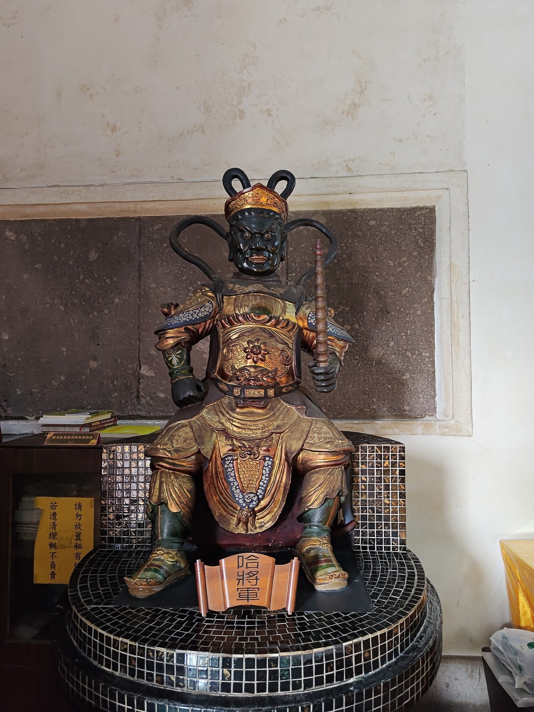
哈將軍 (密跡金剛)口哈黃氣・散人元神
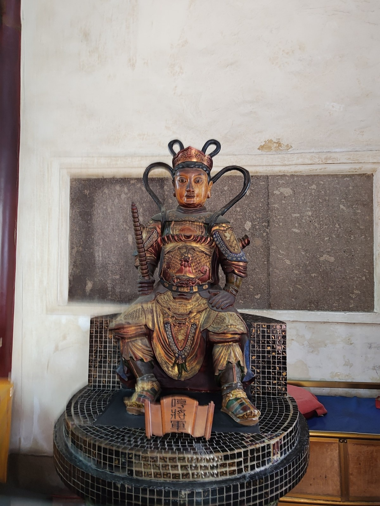
哼將軍 (那羅延金剛)鼻哼白氣・吸人魂魄
山門佛門護法二將，一閉一開、一張一弛、一黑一金，像徵梵文阿（A）與吽（HUM）之宇宙萬物「起始」與「歸宿」。
大觀音亭・神祇導覽解說手冊

哈將軍 (密跡金剛)口哈黃氣・散人元神

哼將軍 (那羅延金剛)鼻哼白氣・吸人魂魄
山門佛門護法二將，一閉一開、一張一弛、一黑一金，像徵梵文阿（A）與吽（HUM）之宇宙萬物「起始」與「歸宿」。
哈將軍在佛教中源自「密跡金剛」（金剛力士），與「哼將軍」（那羅延金剛）同為守衛佛門殿堂、鎮懾外道妖魔的重要護法執金剛神明。
哼將軍原為佛教「那羅延天金剛」，具備摧毀一切魔障的無上金剛力。在明代神魔小說《封神演義》中，哼將軍鄭倫鼻哼白氣吸人魂魄，哈將軍陳奇口哈黃氣散人元神，二人死後封為鎮守佛寺山門之哼哈二將。一哼一哈，在梵文發音中亦象徵「阿（A）」與「吽（HUM）」，代表宇宙萬物生命的「起始」與「歸宿」。
整尊神像刀法遒勁剛烈，尤其在胸甲的金漆浮雕與面部肌肉紋理的刻畫上，精準捕捉到力士蓄勢待發的爆發力；大張之口與隔壁哼將軍緊閉之口形成鮮明強烈對比，將佛門護法剛柔相濟、陰陽相抱的哲學概念體現得淋漓盡致，立於大觀音亭門楣兩側，令入寺參拜者肅然起敬，是府城木雕神像極具代表性的藝術傑作。
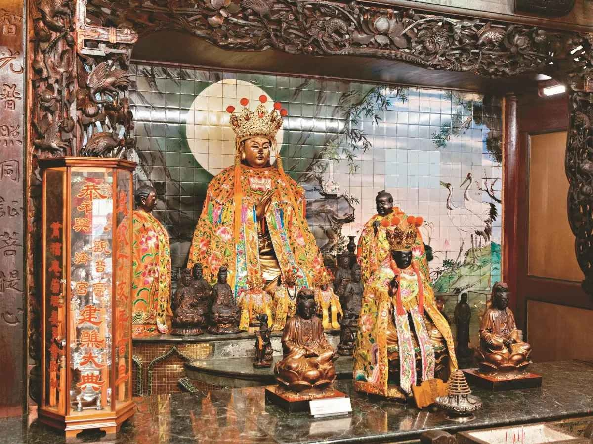
Historic Ming Relic · 1678
明永曆三十二年（1678年）開基，府城四大觀音亭之首。三十三應化身、甘露淨瓶與楊柳枝，慈悲濟度、香火綿延三百餘年。
大觀音亭創建於明鄭永曆三十二年（1678年），主祀觀世音菩薩（觀音佛祖），為臺南府城開基四大觀音亭之首。觀世音菩薩以大慈大悲、救苦救難著稱，具足三十三應化身，手持甘露淨瓶與楊柳枝，廣施法雨，解救世間一切苦難憂惱。大觀音亭香火綿延三百餘年，為全臺歷史最悠久、信眾最為篤信之觀音名剎。
鎮殿觀音佛祖金身端坐中央九龍透雕神龕之中，頭戴華麗重檐珠冠，身披百寶盤龍刺繡霞帔，面容慈祥豐潤、法相莊嚴穆肅，胸前雙手結印慈悲垂視眾生。兩側有善財童子與龍女恭敬侍立，龕前並列有多尊開基與巡境分靈觀音金身。神龕後方襯以國寶彩繪大師蔡草如手繪、天山畫室高溫釉燒之巨幅圓月白鶴磁磚壁畫，神光照映，莊嚴殊勝。
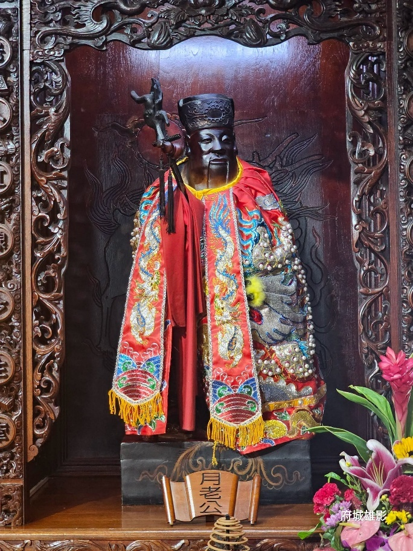
Matchmaker God
闊嘴耳厚擅說合良緣、善聽祈願，牽紅線說合成功率極高。每年促成無數佳偶，前來還願喜餅終年不絕。
月下老人（月老公）為掌理世間男女姻緣宿契之專職正神。大觀音亭月老尊神名列「府城四大月老」之一，在民間享有極高聲譽。其造像最大特徵為「闊嘴耳厚」，相傳「嘴大能言，善於說合良緣；耳大善聽，能洞悉天下男女深藏之祈願心聲」，被信眾親切尊稱為「闊嘴月老」，牽紅線說合成功率極高，每年促成無數佳偶，前來還願喜餅終年不絕。
月老公金身神態可掬，面帶喜悅祥和之微笑，身披繡金大紅龍袍，右手執如意姻緣紅線與姻緣簿，左手拄扶壽杖。神龕前設有專屬「月老公」案牌，兩側備有「姻緣紅線」與「緣粉（緣份）」供善男信女祈取。求姻緣者需先向正殿觀音佛祖參拜稟告，再至月老前擲得聖筊後方可領取紅線置於隨身皮夾或枕下，待覓得良緣成婚時，攜帶喜餅、麻糬（黏住良緣）前來答謝。
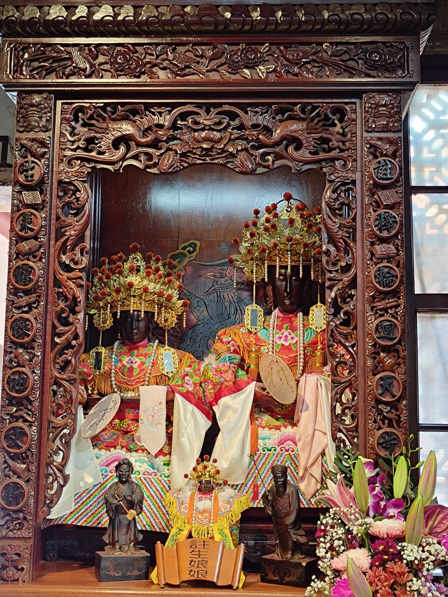
Goddess of Childbirth
閩臺民間掌管生育、保胎、順產及幼兒成長保護之慈愛母神。求子信眾絡繹不絕，護佑代代綿延。
註生娘娘是閩臺民間掌管生育、保胎、順產及幼兒成長保護的慈愛母神。在大觀音亭，求子信眾絡繹不絕，特別盛行「換花」習俗：久未生育或期盼添丁之信徒，攜帶鮮花前來向娘娘祈求，若想求男則換取「白花」，求女則換取「紅花」，帶回插於家中臥室祈求懷孕安胎。待孩童順利出生並滿月、週歲，父母亦會帶油飯、麻油雞前來還願。
神尊神情流露如慈母般溫暖撫慰的微笑，整座神龕在香煙裊裊中更顯溫馨祥和，反映常民對生命延續與幼童平安無比深厚的情感寄託。
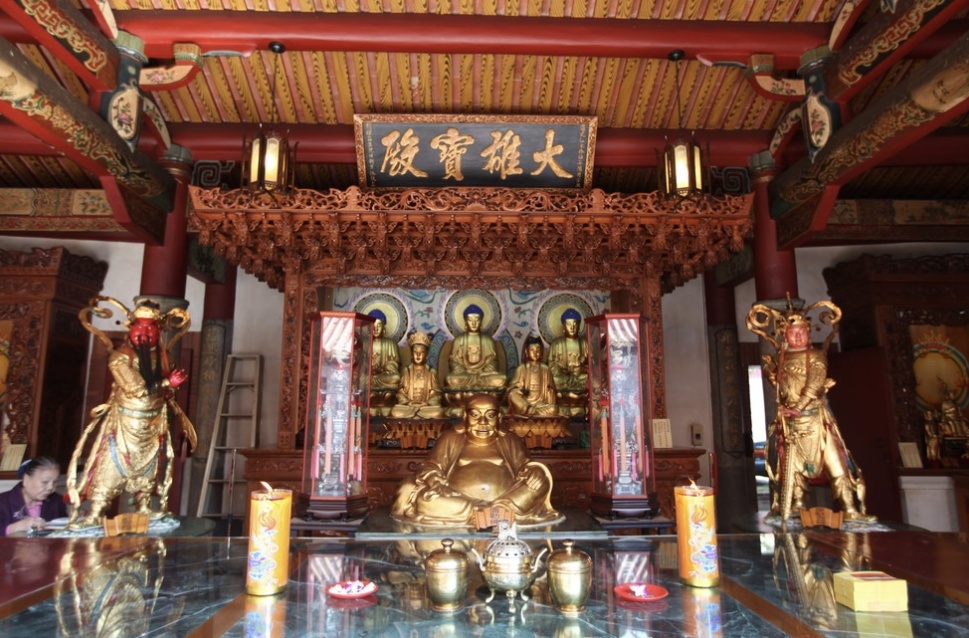
Three Precious Buddhas
顯現純正佛教叢林宗風之核心殿堂。主祀橫三世佛（釋迦牟尼佛、藥師琉璃光如來、阿彌陀佛），前迎笑容可掬之彌勒尊佛。
大觀音亭後殿為「大雄寶殿」，是大觀音亭佛道雙廟體系中顯現正統佛教叢林宗風之核心殿堂。大殿正中主祀佛教「橫三世佛」（三寶佛）：中央為娑婆世界教主「釋迦牟尼佛」、左奉東方淨琉璃世界「藥師琉璃光如來」、右奉西方極樂世界「阿彌陀佛」，左右隨侍迦葉尊者與阿難尊者。神案前迎面恭奉笑容可掬、袒胸露腹的「彌勒尊佛（天冠彌勒／布袋和尚）」，兩側山柱則肅立佛門兩大金剛護法——「韋馱菩薩」與「伽藍菩薩」（關聖帝君佛相）。
殿堂正上方高懸清代黑底金字「大雄寶殿」名匾，梁枋斗栱古雅深沉，展現沉穩肅穆之佛門氣度。三寶佛金身背光飾以七彩背光圓輪，神韻安詳莊嚴；韋馱天將身著精雕金甲、雙手合十橫按降魔寶杵（象徵此寺為迎納四方雲水僧之接待道場）；伽藍菩薩威風凜凜，手握青龍偃月刀護衛伽藍淨土。佛殿將三寶法身、彌勒歡喜與護法威嚴融為一體，為府城佛門建築之經典代表。
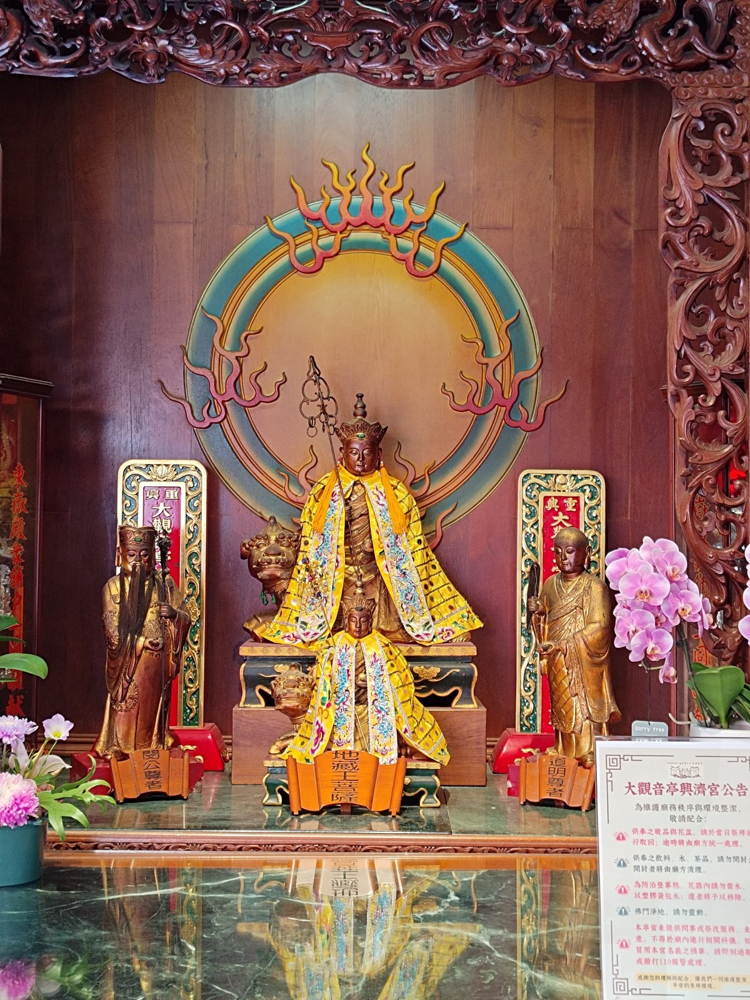
Ksitigarbha Bodhisattva
大願地藏，立下「地獄不空，誓不成佛」至高宏誓。九華山古老公案重現古剎，法相沉靜安詳、護佑先靈超拔。
地藏王菩薩為佛教四大菩薩之一，以「大願」著稱，曾立下「地獄不空，誓不成佛；眾生度盡，方證菩提」的至高宏誓。神尊左側供奉雙手合十的「道明尊者」（僧相），右側供奉手持笏板的「閔公長者」（俗家相）。相傳唐代新羅國（今韓國）王子金喬覺渡海來華，於九華山苦修。九華山地主「閔公」樂善好施，問金喬覺需要多少土地，金喬覺言「只需一袈裟之地」。閔公應允，不料地藏菩薩將袈裟一展，竟覆蓋整個九華山九十九座峰巒。閔公敬服，遂將全山奉獻建寺，其子亦拜菩薩為師，法號「道明」；後來閔公更拜自己兒子為師弟，父子二人遂成為地藏王菩薩的左右隨侍護法。
木雕金身法相沉靜安詳，衣紋垂墜自然流暢；兩位隨侍尊者尊卑有序，將九華山古老佛門公案完美重現於府城古剎之中。
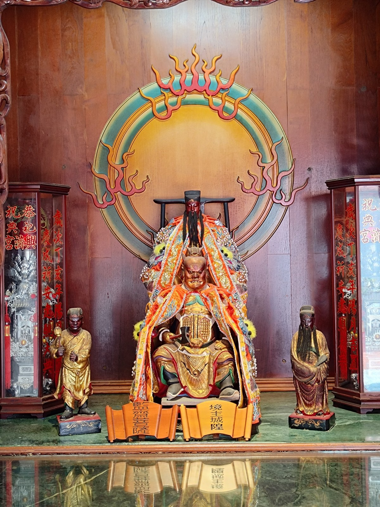
Guardian of Realm
掌管該廟宇所屬聚落範圍之「境主」神祇，護衛道場、保佑周邊居民出入平安、鄰里和睦。
「城隍」原指守護城池之神，後演變為陰陽兩界掌理賞善罰惡、稽察司法的地方最高行政司法神祇。在臺灣寺廟體系中，「境主」是指專門掌管該座廟宇所屬聚落範圍（即「境」）的神祇。大觀音亭作為府城開基古剎，設立境主城隍，意在護衛道場、保佑周邊居民出入平安、鄰里和睦。
神尊面部金漆經過百年歲月撫觸，煥發出溫潤如玉古銅色澤，目光炯炯有神，透出剛正不阿的凜然正氣；與大觀音亭的佛門慈悲氣氛相輔相成，體現府城寺廟「慈悲度眾、賞善罰惡」的完備宇宙觀。
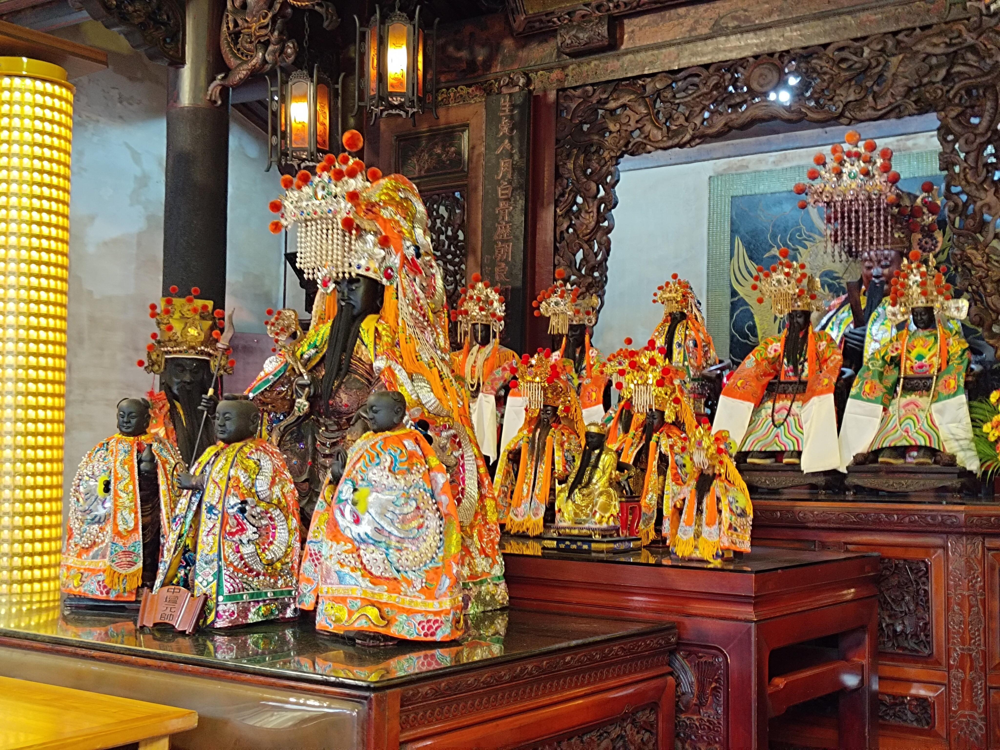
Imperial Doctor Deity · 全臺唯一官祀
北宋神醫吳夲化身，仁者愛人、救死扶傷。神龕懸有清嘉慶「生死人肉白骨歷朝...」長聯，雕花裙堵展現清末至日治木雕名師超絕刀法。
保生大帝俗稱「大道公」，本名吳夲（西元979～1036年），為北宋福建同安白礁人，精通岐黃岐妙之術，採藥濟世、活人無數。清嘉慶年間因神威顯赫、平疫有功，由朝廷正式列入「官方祀典」，成為全臺唯一官祀保生大帝廟，故稱「祀典興濟宮」。
神龕兩側懸掛清代木刻長聯「生死人肉白骨歷朝...」，神龕上方懸有古樸宮燈，雕花裙堵展現清末至日治時期木雕名師之高超刀法。信徒在此虔心祈求身體健康、祛病延壽，為全臺醫護與常民之信仰堡壘。
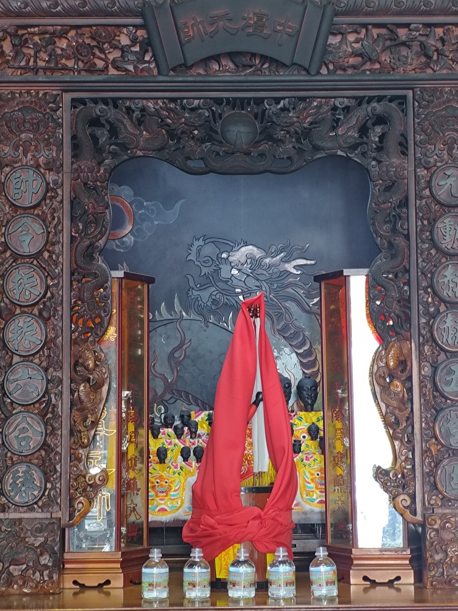
Vanguard Commander
哪吒李元帥率五營神將統帥，居先鋒前導之位，保佑出入平安、孩童茁壯辟邪。神龕花罩採多層次透雕，後方墨龍壁畫以濃淡焦乾筆意揮灑雲氣與龍鱗。
中壇元帥即民間熟知的哪吒三太子、李元帥，為道教五營神將之統帥（中營），也是玉皇大帝麾下平魔伏妖的大元帥。在保生大帝信仰體系中，中壇元帥常居先鋒前導之位，驅逐外邪、巡狩合境，保佑信眾闔家出入平安、孩童茁壯辟邪。
神龕花罩採用多層次「透雕」技法，刀法圓融立體；後方的水墨龍壁畫以濃淡焦乾的傳統水墨筆意揮灑雲氣與龍鱗，與前方金身形成動靜交相輝映的視覺焦點。
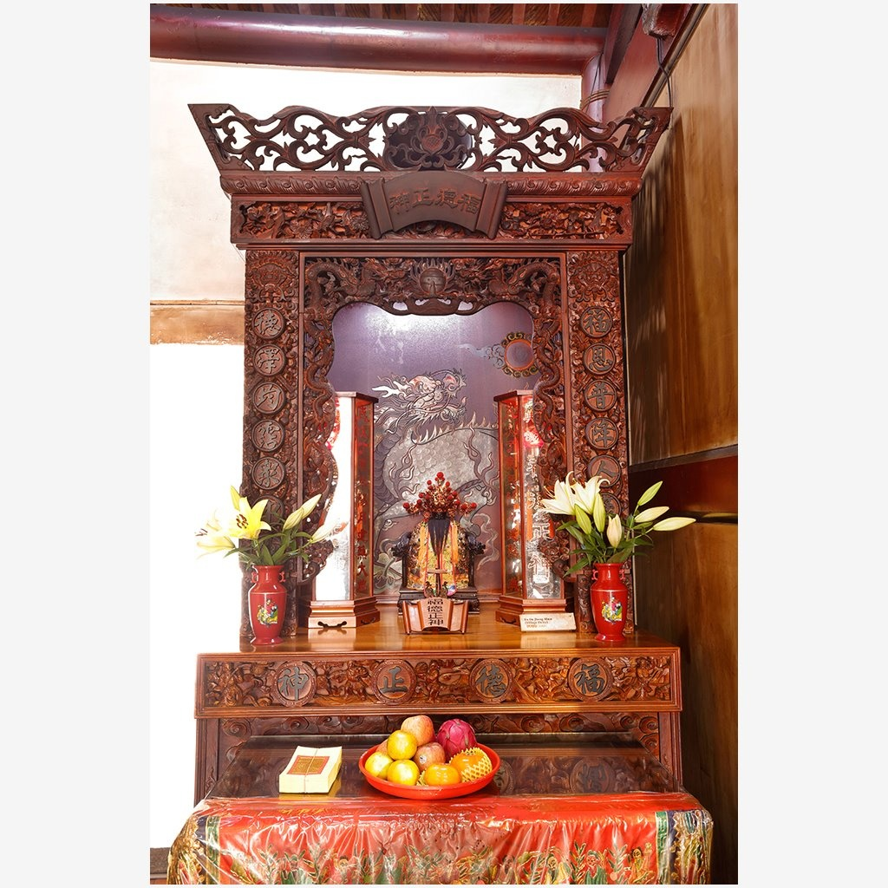
God of Fortune & Land
雙頰堆笑、鬢髮皓然，手撫長鬚與金元寶。承襲府城傳統粧佛與木雕名匠之精細風格，長年護佑觀音亭街周邊商貿繁榮與百姓安居。
福德正神起源於遠古對大地養育萬物的敬畏，即古代「社稷」中的「社神」。興濟宮前古稱「觀音亭街」（今成功路、觀亭街一帶），昔日為府城繁華熱鬧的商貿幹道。周邊行郊商號與住民極度敬仰土地公，逢農曆二月初二、八月十五及十二月十六尾牙，皆依循古禮奉敬三牲果品，祈求經商順利、五穀豐收、招財納福。
承襲府城傳統粧佛與木雕名匠的精細風格。土地公尊顏豐潤飽滿、兩頰堆笑、白鬚柔順下垂拂胸，傳遞出包容萬民的親切溫度。神尊手持金元寶，寓意招財進寶、賜福納吉，展現傾聽百姓疾苦、俯察地利人情的安詳動態。
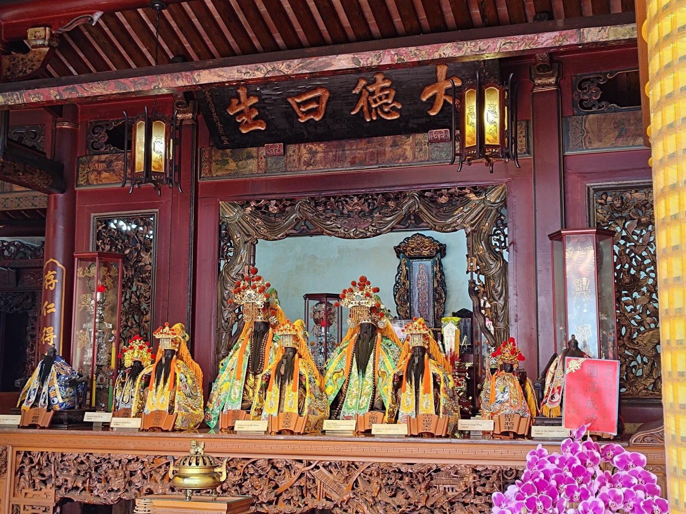
Palace of Sacred Parents ·「大德曰生」
中央為主祀之關聖帝君（文衡聖帝）與地母至尊，神龕後方核心位置恭奉「保生大帝父母神位」。「大德曰生」匾額輝映，體現百善孝為先的傳統孝道倫理。
中央為主祀之關聖帝君（文衡聖帝）與地母至尊，左右排列三官大帝、南斗星君與北斗星君，神龕後方核心位置則恭奉「保生大帝父母神位」。「大德曰生」典出《易經》天地化育萬物之意，體現保生大帝救死扶傷之仁心與儒家孝道倫理。
本殿供奉諸尊神明皆有專屬案牌，神尊服飾刺繡繁複講究，前案擺設鮮花錦簇與精銅香爐。神龕下方雕刻「麒麟望月」與「八仙過海」長條木雕裙板，古意盎然。
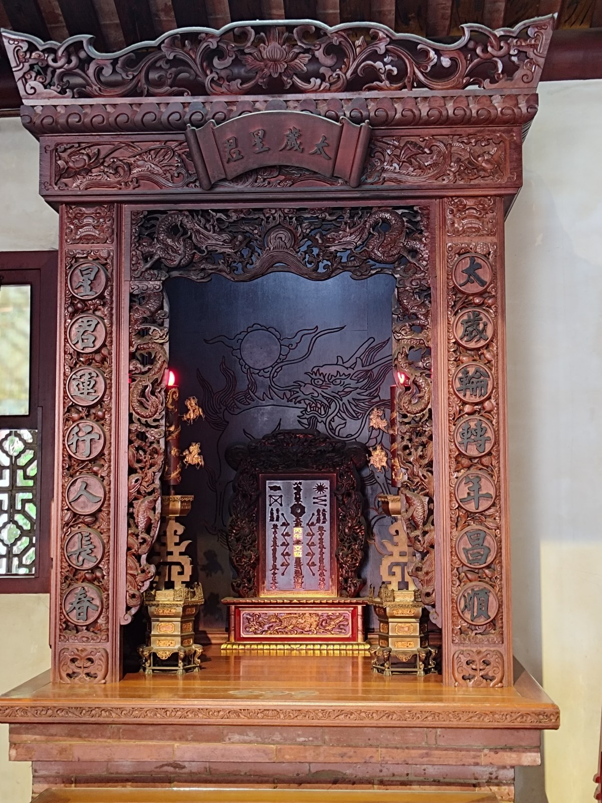
Tai Sui Grand General
太歲星君源自六十甲子輪替運轉。古典深褐色原木色調神龕搭配金漆勾邊，龍身鱗片歷歷可數，為每年新春信徒消災解厄、祈求四季平安之樞紐。
太歲又稱「太歲星君」或「歲神」，源自古代木星運行軌道觀測與干支紀年法。道教依六十甲子輪替設有六十位太歲大將軍，輪值掌管人間吉凶禍福。若流年生肖犯太歲，信徒便會於新春期間前來辦理安太歲科儀。
太歲神牌刻工繁複細緻，龍身鱗片歷歷可數。神龕整體採用古典深褐色原木色調，搭配金漆勾邊，給人安定沉靜的心靈力量，是每年新春府城信徒消災解厄、祈求全家四季平安之重要場所。
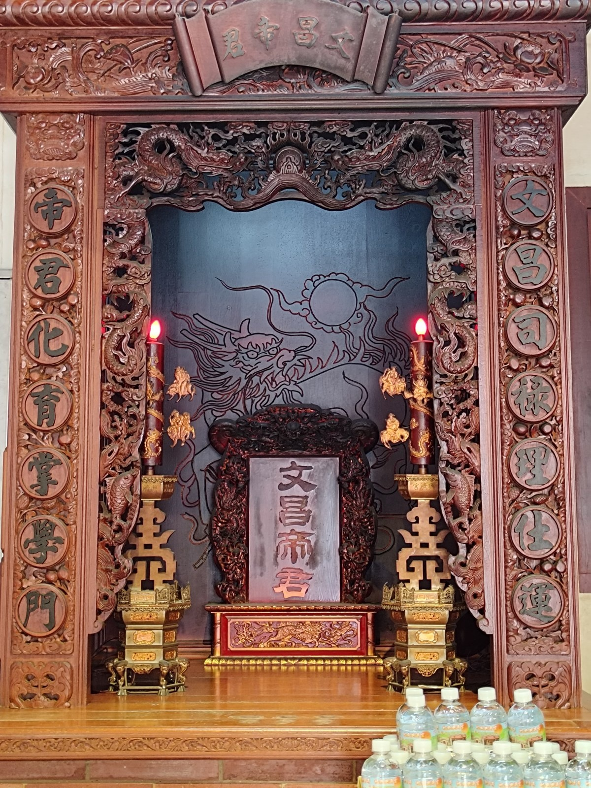
God of Culture & Literature
全稱梓潼帝君，掌管人間祿籍、文章學術與智慧仕途。百年香火燻陶下油潤溫厚，考生參拜心靈沉澱，發揮潛能之定心力量。
文昌帝君全稱「梓潼帝君」，是掌管人間祿籍、科舉考試、文章學術與仕途功名的主宰神。在臺灣每逢大考前夕，考生與家長都會攜帶准考證影本、蔥、芹菜與包子粽子前來祈求金榜題名。
細看神龕木雕層次分明，木質紋理在百年香火燻陶下油潤溫厚。考生參拜時心靈沉澱，藉由神明加持獲得鎮定心神、發揮潛能之定心力量。
月老姻緣紅包使用守則︰